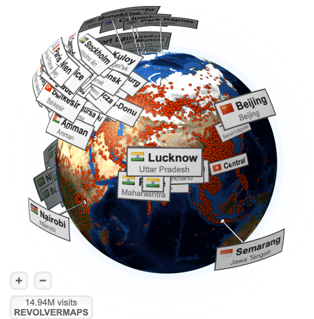
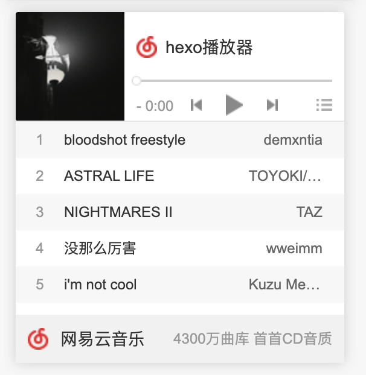
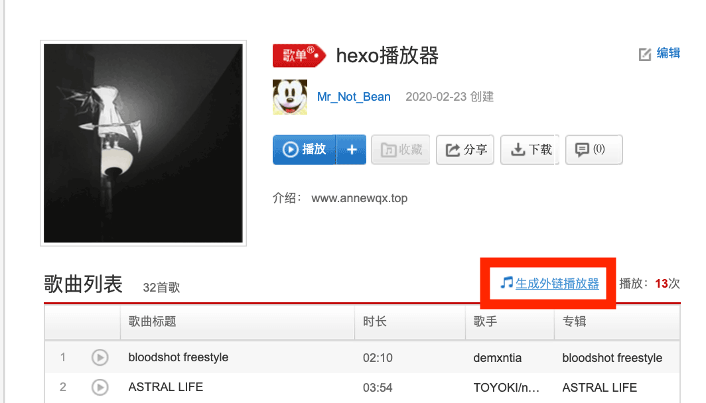
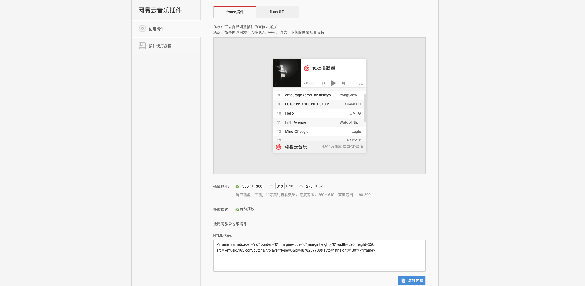
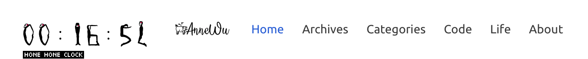
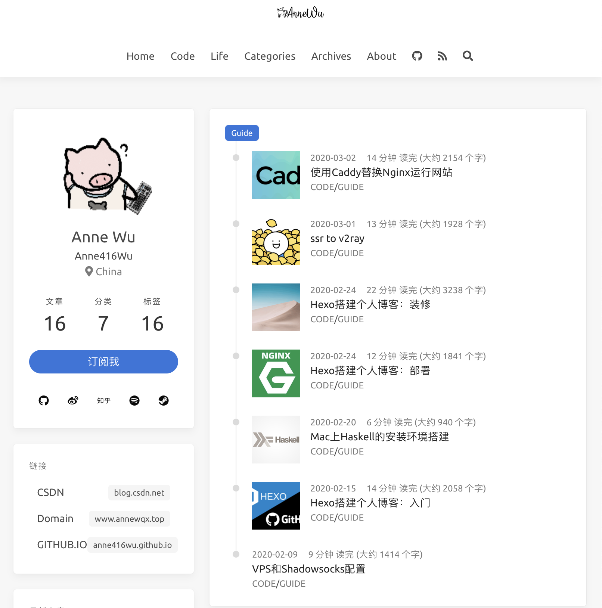
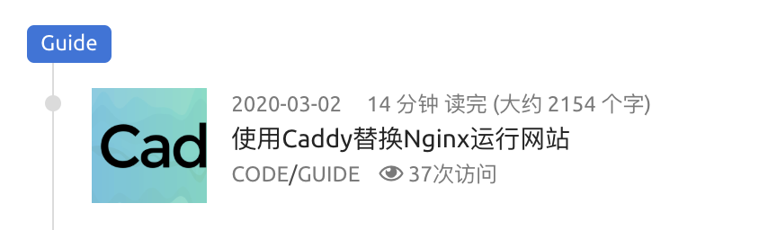

基于icarus主题的Hexo博客装修。本文将介绍除了icarus在_config.yml中提供的功能以外，通过修改其源代码实现的其他扩展功能，页面文件样式的进一步美化等。属于深度定制自己的主题，需要基础的CSS和HTML知识。
本文不涉及所有icarus主题的配置文档`_config.yml`里已经有的配置! 仅对icarus v2.7版本里未加入的功能或者个人觉得不完善的功能进行补充
参考文章
- Yearito：Hexo 搭建个人博客系列 – 基于Next主题
- chingow：Hexo+NexT(v7.0+) 搭建博客 – 基于Next主题，较Yearito的博客全面一些
- alphalxy-Icarus 主题自定义 – 基于Icarus主题
- 本文所修改的主题文件已fork到GitHub仓库
先决条件
需要了解的几个文档：
首先我们要知道icarus的文件结构。icarus采用了ejs模板语言生成页面，使用Bulma框架作为页面样式的控制框架。icatus源代码良好书写习惯的可扩展性是我们修改的基础。icarus所有的页面样式都存在themes/icarus/layout中，我们重点需要关注的文件有:
1 | |
- 其余我想要做改动的还有plugin文件夹，用于存放分析和计数需要的工具；search文件夹，用于存放几种搜索所需要的工具(icarus作者并没有使用hexo-generate-search的插件生成索引，而是自己写了一个insight函数生成索引列表。respect🤔。但是它的搜索展现思路变为了仅显示包含搜索条件的文章名和首行，这与我们希望显示搜索条件出现在文章的哪一处的需求不同😑)
功能
插件是最简单的提升博客丰富性的方法。而多数插件只需要一行js代码就能实现
访客地球

功能：展示页面的总浏览量/页面浏览人来源的的热力图/同时在线人的地址标签
使用方法：
在官网复制所给的js代码
在
/icarus/layout/widget目录下，新建文件map.ejs和map.locals.js。把复制的js代码粘贴到map.ejs文件中，而map.locals.js中复制它隔壁的profile.locals.js中的内容即可。该文件的作用是绑定渲染该ejs文件(可以不添加)layout/widget/map.ejsmap.ejs 1
<script type="text/javascript" src="//rf.revolvermaps.com/0/0/6.js?i=53u8jvixw8q&m=7&c=e63100&cr1=ffffff&f=arial&l=0&bv=90&lx=-420&ly=420&hi=20&he=7&hc=a8ddff&rs=80" async="async"></script>layout/widget/map.locals.jsmap.locals.js 1
2
3module.exports = (ctx, locals) => {
return locals;
}在
/icarus/_config.yml配置文件中，模仿已有的widget，添加如下字段_config.yml_config.yml 1
2
3-
type: map
position: right现在我们有一个访客地球的widget了!
网易云音乐

功能：网易云音乐外链播放器
地址：网易云音乐官网
使用方法：
在网易云音乐官网，登录后，选择一个歌单，点击歌单左上角的生成外链播放器，注意，歌单中不能包含VIP歌曲，否则会提示版权不允许

生成iframe插件。建议使用iframe插件，一方面是可以自己调整插件的属性，另一方面是很多浏览器现在对flash的使用有限制。复制给出的HTML代码

与添加访客地球widget的过程类似，在
/icarus/layout/widget目录下，新建文件music.ejslayout/widget/music.ejsmusic.ejs 1
<iframe class="card widget" height=400 width=100% src="//music.163.com/outchain/player?type=0&id=4878237788&auto=0&height=430"></iframe>在
music.locals.js填入与之前一样的绑定渲染函数在
/icarus/_config.yml配置文件中，模仿已有的widget，添加如下字段_config.yml_config.yml 1
2
3-
type: netEase
position: right现在我们有一个播放器的widget了😺
人体时钟

功能：在导航栏上添加一个有交互性的小人时钟
地址：ホネホネ・クロック 時計・ブログパーツ(这个作者审美超级好🥰)
使用方法：
复制作者给的js代码：
1
<script charset="Shift_JIS" src="http://chabudai.sakura.ne.jp/blogparts/honehoneclock/honehone_clock_tr.js"></script>在
/icarus/layout/common/nvabar.ejs中，在第四行，添加一个新的块。class="is-hidden-mobile"是bulma框架中的一种样式，意为当屏幕宽度小于desktop时，不显示该元素。因为平板和手机的浏览器中一般没有flash插件，所以做这个处理。/layout/coppom/nvabar.ejsnvabar.ejs 1
2
3
4
5
6
7<nav class="navbar navbar-main">
<div class="container">
<div class="navbar-brand is-flex-center">
<!--以下是新插入的块 -->
+ <div class="is-hidden-mobile">
+ <script charset="Shift_JIS" src="http://chabudai.sakura.ne.jp/blogparts/honehoneclock/honehone_clock_tr.js"></script>
+ </div>
添加密码
该功能由 hexo-blog-encrypt 插件提供，效果可见DUDES
使用方法参阅hexo-blog-encrypt官方文档即可
黑暗模式
在命令行，进入博客的根目录
1 | |
现在博客的navbar中新出现了一个小灯泡图标，点一下就能看到黑暗模式效果了
现在我们添加根据浏览器设置自动变为黑暗模式的代码，除了根据浏览器的配色模式，如果当晚/日，用户已经有与浏览器模式不同的选择，要遵循用户的选择 (即当晚浏览器是dark mode时，用户在博客内选择light mode，或相反)
1 | |
js获取浏览器颜色模式代码：
window.matchMedia('(prefers-color-scheme: dark)').matches
related post widget
- 在每篇博文增加一个widget，展示和这篇文章有相同tag的文章列表
- 添加文件
layout/widget/related_posts.ejs
1 | |
同目录下添加渲染绑定js文件related_posts.locals.js，使该widget仅对posts页面生效
1 | |
在_config.yml中，widget下添加related_posts
1 | |
布局
Valine 头像
icarus原生配置中没有默认的Valine头像值
打开
icarus/layout/comment/valine.ejs，插入avatar的配置信息layout/comment/valine ejsvaline 1
2
3
4
5
6
7
8
9
10
11<script>
new Valine({
el: '#valine-thread' ,
+ avatar: 'retro',
notify: <%= get_config('comment.notify') %> ,
verify: <%= get_config('comment.verify') %> ,
app_id: '<%= get_config('comment.app_id') %>',
app_key: '<%= get_config('comment.app_key') %>',
placeholder: '<%= get_config('comment.placeholder') %>',
});
</script>评论默认头像将会变为八位像素复古头像，如果用户在gravatar注册过，则会显示注册的绑定头像
Valine更多默认头像设置参考Valine头像配置
修改widget和文章比例
参考文章：
- bulma框架中文文档
- Hexo&icarus主题修改
- 我在主题修改中把比例配置抽取到_config.yml中了，可见GitHub仓库
- 原本icarus最大化后三栏居中，两侧会有很宽的空白，我想消灭这个空白；
- 我想实现的展示逻辑是，屏幕宽度足够时，首页显示三栏，博文页显示两栏；如果屏幕宽度再增加，则都显示三栏。以下把profile\link\recent_poat\tag\archive这几个widget分类为个人资料栏(统称profile栏)，top\tagcloud\music\map分类为目录工具栏(统称目录栏)，中间的最大的那一栏统称博文栏。目录栏在博文页居左，个人资料栏在首页居左。
- 首先是icarus主题的
_config.yml，加入以下配置。相关配置含义之后会做解释。我们的网页最大化后两侧宽阔的白边主要就是由于原来的配置里每一栏最后相加之和不是12(bulma的12格布局)，没有占满整个屏幕。
1 | |
对ejs文件的改动主要涉及三个文件
layout/layout.ejslayout/common/widget.ejs以及source/css/style.styl|– icarus
|-- layout | |-- [layout.ejs](https://github.com/Anne416wu/hexo-theme-icarus/blob/anne/layout/layout.ejs) | |-- common | | |-- [widget.ejs](https://github.com/Anne416wu/hexo-theme-icarus/blob/anne/layout/common/widget.ejs) |– source
|– css
| |– style.stylstyle.styl：先说这个css文件，因为通过这个文件我们能更好的理解bulma框架。bulma框架自动根据屏幕大小对照我们的预设适配不同比例的页面：mobile-手机/tablet-平板/desktop-pc/widescreen-全屏/fullhd-全屏。至于不同屏幕对应哪个大小，我们可以采用icarus原有的方案，也可以用更为严格的方案：1
2
3
4
5gap = 64px
screen-tablet = 769px
screen-desktop = 1088pxs
screen-widescreen = 1280px
screen-fullhd = 1472px根据我的经验，使用13inch的mbp，按照icarus原有的方案，屏幕的1/3是手机模式，屏幕的2/3是平板(tablet)模式，大于屏幕的2/3是pc(desktop)模式，大于屏幕的8/9是全屏(widescreen)模式
layout.ejs：更改控制博文栏占页面比例的函数main_column_class()：layout/layout.ejslayout.ejs 1
2
3
4
5
6
7
8
9
10
11
12
13
14
15
16<% function main_column_class() {
switch (column_count()) {
case 1:
return 'is-12';
case 2:
return 'is-8-tablet is-8-desktop is-8-widescreen';
case 3:
if(is_post() === false){
return get_config('proportion.homepage.article');
}
else{
return get_config('proportion.post.article');
}
}
return '';
} %>_config.yml中对应设置含义：当存在三栏的配置时，如果屏幕大于平板小于pc，博文栏占2/3；如果屏幕大于pc小于全屏，对于博文页，博文栏占9/12(即3/4)，对于非博文页，博文栏占6/12(即1/2)；如果屏幕大于全屏，博文栏占3/5；fullhd以此类推1
2
3
4
5proportion:
homepage:
article: 'is-two-thirds-tablet is-6-desktop is-6-widescreen is-5-fullhd'
post:
article: 'is-two-thirds-tablet is-9-desktop is-three-fifths-widescreen is-three-fifths-fullhd'layout/common/widget.ejs- 更改控制边栏占页面比例的函数
side_column_class()：
layout/common/widget.ejslink 1
2
3
4
5
6
7
8
9
10
11
12
13
14_<% function side_column_class() {
switch (column_count()) {
case 2:
return 'is-4-tablet is-4-desktop is-3-widescreen';
case 3:
if(is_post() === false){
return get_config('proportion.homepage.sidebar');
}
else{
return get_config('proportion.post.sidebar');
}
}
return '';
} %>_config.yml中对应设置含义：当存在三栏的配置时，当屏幕大于平板小于pc，仅显示左侧栏，占1/3，当屏幕大于pc小于全屏，博文页仅显示左侧栏，占3/12，非博文页显示左右两栏，各占3/12；以此类推1
2
3
4
5proportion:
homepage:
sidebar: 'is-one-third-tablet is-3-desktop is-3-widescreen is-one-fifth-fullhd'
post:
sidebar: 'is-one-third-tablet is-3-desktop is-one-fifth-widescreen is-one-fifth-fullhd'- 更改控制模块可见性的函数
visibility_class()：如果页面不是博文页，当屏幕小于或等于平板时，仅显示左侧栏，当屏幕大于平板时，左右侧栏都显示；如果页面是博文页，当屏幕小于或等于PC大小时，仅显示左侧栏，当屏幕大于pc时，左右侧栏都显示
layout/common/widget.ejslink 1
2
3
4
5
6
7
8
9<% function visibility_class() {
if(is_post()===false && column_count() === 3 && position === 'right'){
return 'is-hidden-touch';
}
if(is_post()===true && column_count() === 3 && position === 'left'){
return 'is-hidden-touch is-hidden-desktop-only';
}
return '';
} %>- 更改控制侧栏输出顺序的函数
order_class()：当页面是博文页，目录栏在左侧，profile栏在右侧；当页面不是博文页，profile栏在左侧，目录栏在右侧
layout/common/widget.ejslink 1
2
3
4
5
6
7
8<% function order_class() {
if(is_post() === true){
return position === 'left' ? 'has-order-3' : 'has-order-1';
}
else{
return position === 'right' ? 'has-order-3' : 'has-order-1';
}
} %>- 更改主函数，大概从第27行开始，做下述更改。这里函数原本的意思是，在屏幕小于全屏时，将右侧栏合并到左侧栏显示。我们更改为，当页面不是博文页且屏幕大小小于pc时，将右侧栏合并到左侧栏
layout/common/widget.ejslink 1
2
3
4- <% if (position === 'left') { %>
+ <% if (position === 'left' && is_post() === false ) { %>
- <div class="column-right-shadow is-hidden-widescreen <%= sticky_class('right') %>">
+ <div class="column-right-shadow is-hidden-desktop">- 更改控制边栏占页面比例的函数
至于说手机端的情况，反正只有一栏，保持原来的设置不变就好了，但是原来的设置中手机端首页是先显示博文再显示profile等widget，而我希望手机端的首页先展示profile的widget，这个非常容易，在
layout/layout.ejs中layout/layout.ejslayout.ejs 1
2
3<%- _partial('common/widget', { position: 'left' }) %>
<div class="column <%= main_column_class() %> has-order-2 column-main"><%- body %></div>
<%- _partial('common/widget', { position: 'right' }) %>这三行，如果第二行放在最前，手机端首页就先显示博文索引再显示所有widget，如果第一行放在前，手机端首页就先显示属性为left的widget，再显示属性为right的widget，最后显示博文索引。以此类推。
同时，如果手机端进入除了首页之外的其他主页(目录页归档页等)，profile widget也会被放在最前，我们并不需要在这些页面展示profile wideget，因此，在
layout/common/widget.ejs中，在visibility()函数中添加以下选择语句：layout/common/widget.ejslink 1
2
3if(is_home()===false && is_post()===false){
return 'is-hidden-mobile';
}
修改标签和目录页为时间轴
原生的icarus这两页的展示方式与homepage一致，依次展示按块展示每篇博客的标题和简介。这样的展示效率并不高。我希望把这两页的展示方式替换为和存档archive页相同的时间轴显示
我们要用到的文件有：
|– includes
| |– generators
| | |– category.js
| | |– tag.js
|– layout
| |– archive.ejs
| |– custom_cat.ejs
| |– custom_tag.ejs
修改目录页生成器
/includes/generators/category.js：在第23行，把默认输出页面样式的archive排到最前即可includes/generators/category.jscategory.js 1
2- layout: ['category', 'archive', 'index'],
+ layout: ['archive', 'category', 'index'],这样修改后，进入目录页，比如Code/Guide后，页面就会按照时间轴显示该分类下所有文章，但是时间轴的标签依旧是2020\2019，而且文章的信息只有日期似乎有些寡淡了，如果我们想展示文章字数/展示文章阅读人数/让标签显示分类的名称呢？

其实非常简单。我们在layout文件夹下，新建一个文件
custom_cat.ejs复制
archive.ejs中的代码到custom_cat.ejs修改时间轴标签为分类名称：第六行，进行替换
layout/custom_cat.ejscustom_cat.ejs 1
2
3
4<h3 class="tag is-link">
- <%= month === null ? year : time.locale(get_config('language', 'en')).format('MMMM YYYY') %>
+ <%= page.category %>
</h3>显示文章的字数和估计阅读时间：在第十九行的
class=content块的<time>标签中，添加<span>块layout/custom_cat.ejscustom_cat.ejs 1
2
3
4
5
6
7
8
9<div class="content">
<time class="has-text-grey is-size-7 is-block is-uppercase" datetime="<%= date_xml(post.date) %>"><%= date(post.date) %>
+ <span>
+
+ <% const words = word_count(post._content); %>
+ <% const time = duration((words / 150.0) * 60, 'seconds') %>
+ <%= `${ time.locale(get_config('language', 'en')).humanize() } ${ __('article.read')} (${ __('article.about') } ${ words } ${ __('article.words') })` %>
+ </span>
</time>添加阅读次数。
尽管busuanzi十分方便，但是它不支持在目录页显示每篇文章的阅读量(=_=就是一个API)，所以我们要换用一个新的页面统计工具，为防止此部分篇章过长，相关配置将放到本文的阅读量统计替换部分。
以下代码未通过测试，请勿使用在
custom_cat.ejs的第四十行左右，进行以下内容的添加layout/custom_cat.ejscustom_cat.ejs 1
2
3
4
5
6
7
8
9
10
11
12
13
14
15
16<% if (post.categories && post.categories.length) { %>
<div class="level-item is-size-7 is-uppercase">
<%- list_categories(post.categories, {
class: 'has-link-grey ',
show_count: false,
style: 'none',
separator: ' / '
}) %>
</div>
<% } %>
<% if (has_config('comment.appID') && get_config('comment.type') === 'valine') { %>
<span class="level-item has-text-grey is-size-7 is-uppercase">
<i class="far fa-eye"></i>
<%- _p('plugin.visit', '<span data-hk-page="post.url"><i class="fa fa-spinner fa-spin"></i></span>') %>
</span>
<% } %>再次修改目录页生成器
category.jsincludes/generators/category.jscategory.js 1
layout: ['custom_cat', 'category', 'index'],完成!🤩

用相似的方法，我们修改tag页
- 添加生成器
/includes/generators/tag.js。具体内容可参考tag.js - 添加
layout/custom_tag。内容可参考 custom_tag.ejs
这里说明一下，这里标签的修改只做了最简单的替换，我并没有去动archive里原本的生成函数，所以时间轴的逻辑依然是按照时间顺序排列，按照年份分区。如果希望能修改为按照分类的子目录分区–我尝试了hexo提供的
category.parentcategory.children等重构函数，但遇到了几个异常抛出。这个bug先留一下吧。- 添加生成器
将tag页合并入categories页
1 | |
添加警告块
在source/css/style.styl中添加如下样式：
1 | |
在写作时，使用以下代码即可
1 | |
效果：
这里是警告块内容
添加页末版权
- 在
layout/common下添加文件copyright.ejs。内容可参考copyright.ejs - 在
source/css下添加文件copyright.styl。内容可参考copyright.styl。其中提供两种样式：my-post-copyright和post-copyright - 在
source/css/style.styl中导入copyright.stylsource/css/style.styl 1
2
3
4/* ---------------------------------
* Add Copyright CSS
* --------------------------------- */
@import copyright - 在
layout/common/article.ejs中插入copyright.ejs1
2
3
4
5
6
7<div class="content">
<%- index && post.excerpt ? post.excerpt : post.content %>
</div>
+ <% if (is_post()===true) { %>
+ <%- _partial('common/copyright') %>
+ <% } %>
<% if (!index && post.tags && post.tags.length) { %>
数据统计
SEO优化
评论邮件回执
修改busuanzi阅读量统计为leancloud
参考文章
https://www.githang.com/2019/05/30/hexo-article-reading-statistics-based-on-leancloud/
https://jerryzou.com/posts/introduction-to-hit-kounter-lc/
https://github.com/bulandent/hexo-theme-bubuzou/blob/master/doc/doc-zh.md
因为我们在配置Valine时已经注册了leancloud，所以这里就以leancloud为例。
------ to be continued ------
### 添加ads
Gulp压缩
1 | |